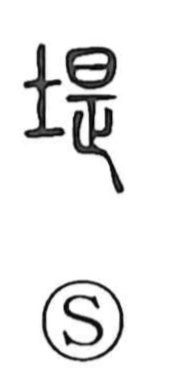

隄

Uncategorized
Kun: tsutsumi | On: tei
embankment ・ bank ・ dike
Explanation
A phono-semantic graph: the left component 阝 (mound, earthwork) conveys the idea of an embankment, while 是 serves as the phonetic, marking the on reading tei, as seen also in 提 (tei, sageru). The Shuowen glosses it as “to stagnate, to hinder,” evoking a structure that checks the flow of water. In use it denotes the tsutsumi or dote—an earthen bank—and in origin signifies an embankment raised to preserve and protect a sacred place.